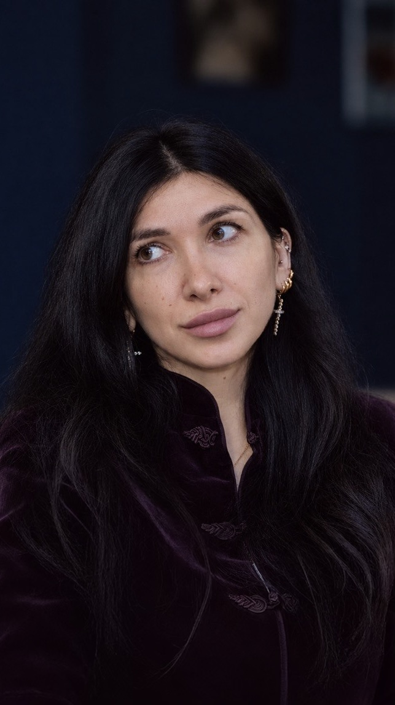

Знакомство
Короткий созвон, чтобы обсудить ваш запрос, ожидания и организационные вопросы.
Бесплатно15 минут
Бережная работа с тем, что волнует. Вместе мы сможем лучше понять себя, найти опору и постепенно двигаться к изменениям.


«В терапии важно не торопить себя, а постепенно находить понимание и поддержку».
Ирина КузнецоваЯ практикующий психолог и психотерапевт. В своей работе я создаю пространство, в котором можно говорить открыто — без необходимости соответствовать ожиданиям и бояться осуждения.
Я опираюсь на доказательные и глубокие методы психотерапии, внимательно отношусь к индивидуальному опыту и темпу каждого человека.
Высшее психологическое образование, магистратура.
Личная терапия, регулярные супервизии и профессиональные сообщества.
Онлайн по всему миру и очные встречи в вашем городе.
Перед публикацией уточните и добавьте подтверждённые сведения о стаже, часах личной терапии, супервизиях и членстве в ассоциациях.
Мы будем исследовать ваш опыт бережно и в комфортном для вас темпе. В терапии нет необходимости «быть правильным» — важно то, что происходит именно с вами.
Выберите тему, которая сейчас ближе всего. Это поможет обозначить, с чего хотелось бы начать разговор.
Можно выбрать одну тему или написать о том, что вас беспокоит, своими словами.
Перед началом можно познакомиться, задать вопросы и обсудить, подходит ли вам такой формат работы.
Короткий созвон, чтобы обсудить ваш запрос, ожидания и организационные вопросы.
Индивидуальная встреча по видеосвязи — Telegram или Zoom.
Индивидуальная консультация в кабинете в центре города.
Сессия длится 50 минут. Обычно встречи проходят 1–2 раза в неделю в заранее согласованное время.
Об отмене или переносе встречи необходимо предупредить не позднее чем за 24 часа. При более поздней отмене сессия оплачивается.
Информация, которой вы делитесь на встречах, остаётся конфиденциальной в рамках профессиональных и правовых норм.
Напишите мне — обсудим ваш запрос, отвечу на вопросы и подберём удобное время для знакомства.
Написать Ирине ↗Тема обращения не выбрана